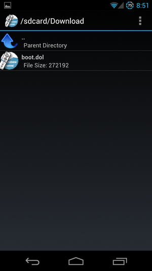
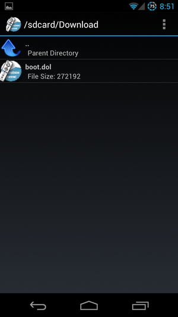
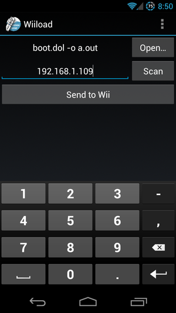
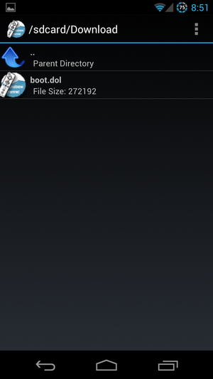

Wiiload for Android is a graphical interface for the Wiiload client for Android. Wiiload is an application that sends bootable ELF or DOL files over the network to a Wii running the Homebrew Channel mod. This allows for one to boot native Wii code and applications without using a computer at all, only using a phone and the Wii.
Wiiload for Android is possible, as Android applications are programmed in Java, so JWiiload for Android is a port of JWiiload, a project of mine that was also written from the ground up. In fact, it was written with the intent of releasing Wiiload for Android, and eliminating the need of a computer from the homebrew scene on the Wii.
The application can launch itself from intents (from .zip, .elf, or .dol from other file browser's open with... dialogs) or through the own built in filebrowser which isn't as simple as it appears. It displays images and contains filetype filtering, and support of a home directory and new file support. The application checks if the user's wifi is on, and if it's not, requests it to be enabled. The scan option should locate the Wii if it is on the same Wi-Fi network as the phone, usually returning the IP address of the Wii in seconds, assuming the Wii has been put on the Homebrew Channel. Arguments and port can be specified from the menu on the main screen. There is an ad at the bottom of the screen, but it can be disabled by entering "I love you" under the "Make New Folder" dialog in the file browser. Please report any errors!
 
For more information, see the WiiBrew page on Wiiload for Android.